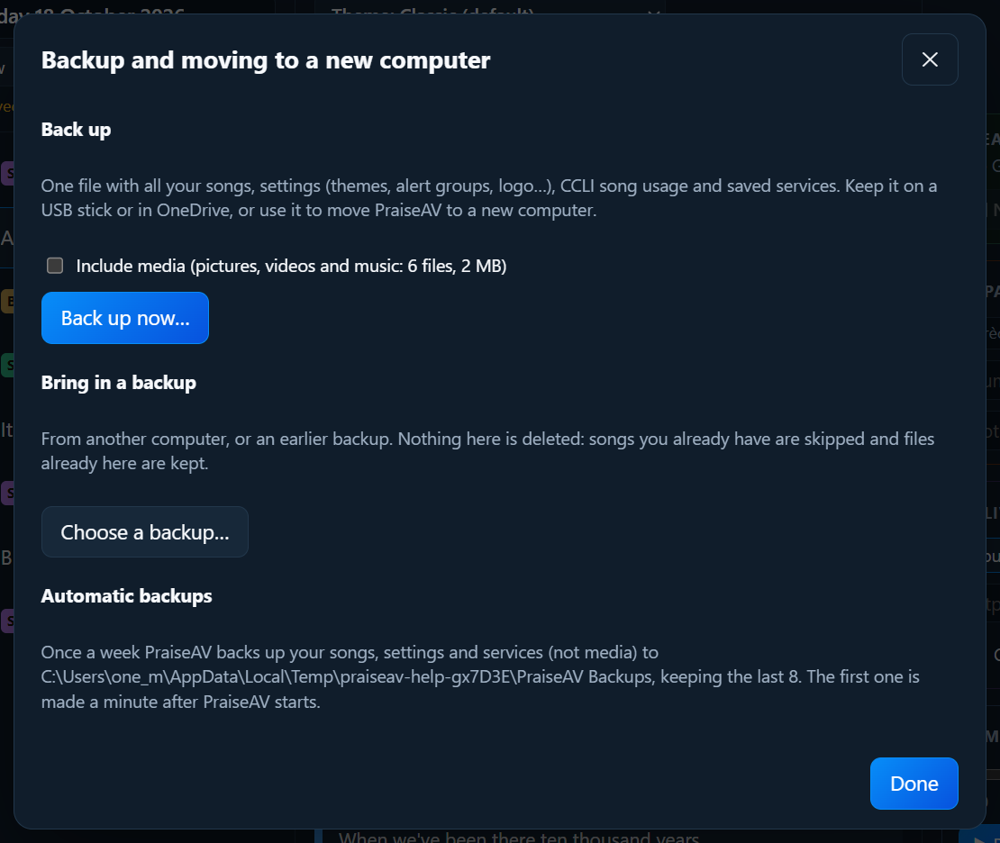

Cuidar de PraiseAV
Copias de seguridad y traslado a otro ordenador
Hacer una copia
- Haz clic en Abrir (en la columna Culto) y luego en Copia y traslado….
- Marca Incluir medios si quieres que también vayan tus imágenes, vídeos y música. Muestra cuánto ocupan.
- Haz clic en Hacer copia ahora… y elige dónde. Lo mejor es un USB o OneDrive: un sitio que no sea este ordenador.

La copia es un solo archivo (.praiseav-backup) con todas tus canciones, ajustes (temas, grupos de avisos, logotipo…), el uso de canciones para CCLI y los cultos guardados.
Copias automáticas
Una vez por semana, PraiseAV hace solo una copia de tus canciones, ajustes y cultos (no los medios) en Documentos › PraiseAV Backups. Guarda las 8 últimas. La ventana de copias dice cuándo se hizo la última.
Pasar a un ordenador nuevo
- En el ordenador antiguo, haz una copia con medios.
- Instala PraiseAV en el ordenador nuevo.
- Haz clic en Abrir, Copia y traslado… y luego en Elegir una copia….
- Dice qué tiene: de qué ordenador, cuándo, cuántas canciones y cultos. Haz clic en Traerla.
Traer una copia no borra nada
No se borra nada de este ordenador. Las canciones que ya tienes se saltan, y los archivos que ya hay se conservan. Así puedes traer una copia de otro ordenador para añadir sus canciones sin perder las tuyas.
Los ajustes de la iglesia (temas, logotipo…) se toman de la copia.
Dónde guarda PraiseAV las cosas
| Qué | Dónde |
|---|---|
| Medios | Documentos › PraiseAV Media (o la carpeta que elegiste) |
| Copias automáticas | Documentos › PraiseAV Backups |
| Cultos | Donde elegiste en Abrir (este ordenador, OneDrive, Google Drive…) |
| Canciones y ajustes | Dentro de PraiseAV. Usa una copia para pasarlos. |
| Canciones compartidas | La carpeta PraiseAV Songs que elegiste en Compartir canciones… (mira Canciones) |